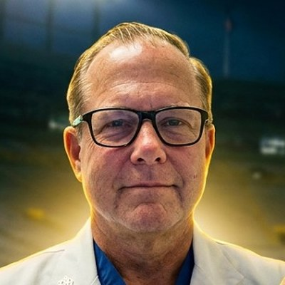

Michael Maier, M.D. “GolfDoc”
Michael Maier, M.D. — “GolfDoc” to the show — is an orthopedic surgeon and has been an Assistant Professor of Orthopedic Surgery at Baylor College of Medicine since January 2018. A cum laude graduate of the University of Notre Dame (Class of 1994), he earned his M.D. at UT Southwestern Medical School and trained in general and orthopaedic surgery at Duke University Medical Center. Board certified by the American Board of Orthopaedic Surgery, he cares for athletes and active patients across sports medicine, joint reconstruction, trauma and golf-specific injuries, and holds Titleist Performance Institute Medical Level 3 certification. On Golden Helmets & Green Jackets he brings the operating-room view to college football, golf and the Notre Dame stories he has loved since his days under the Golden Dome. Go Irish!